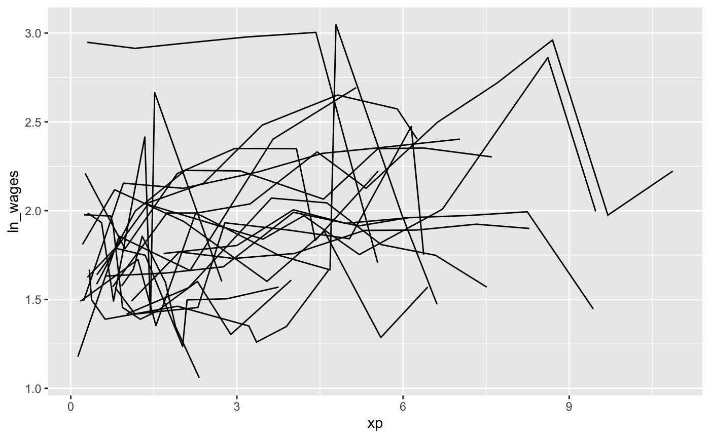
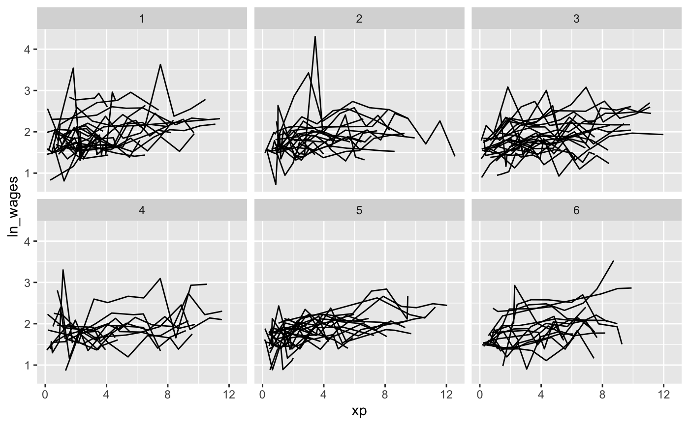
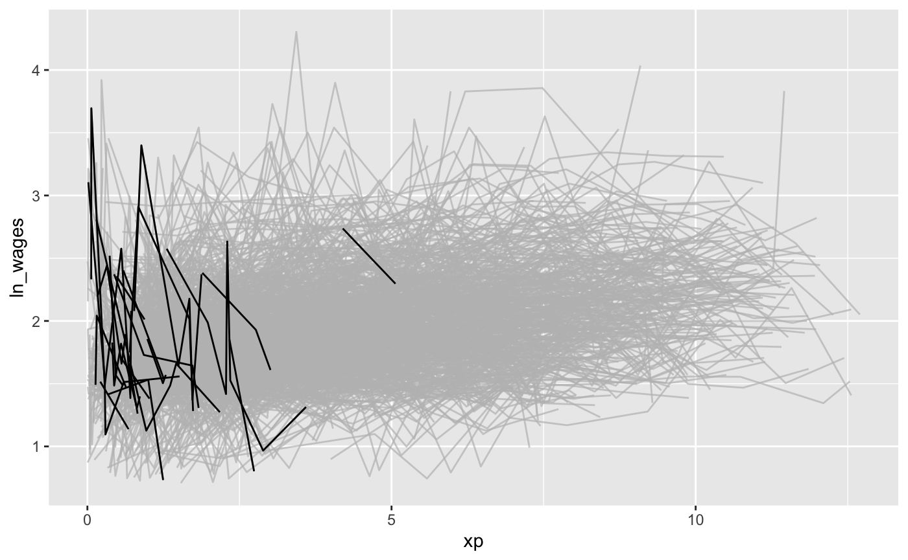
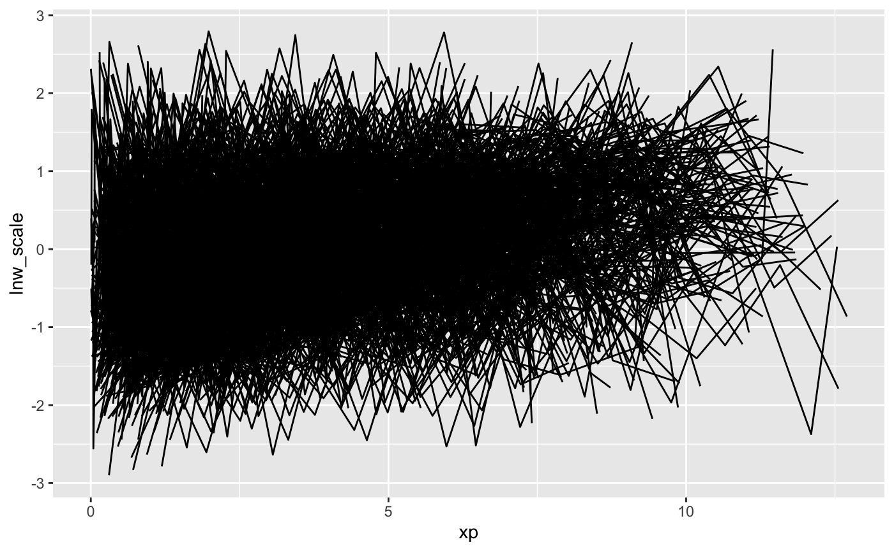

Visualisation Gallery
visualisation-gallery.Rmdbrolgar explores two ways to explore the data, first exploring the raw data, then exploring the data using longnostics
Exploring raw data
When you first receive your data, you want to look at as much raw data as possible. This section discusses a few techniques to make it more palatable to explore your raw data without getting too much overplotting.
Select a sample of individuals
Sample n random individuals to explore (Note: Possibly not representative)
For example, we can sample 20 random individuals, and then plot them. (perhaps change sample_n_keys into sample_id.)
wages_ts %>%
sample_n_keys(size = 20)
#> # A tsibble: 152 x 9 [!]
#> # Key: id [20]
#> id ln_wages xp ged xp_since_ged black hispanic high_grade
#> <int> <dbl> <dbl> <int> <dbl> <int> <int> <int>
#> 1 234 1.57 1.10 1 1.10 0 0 9
#> 2 234 1.54 2.35 1 2.35 0 0 9
#> 3 234 1.68 3.36 1 3.36 0 0 9
#> 4 234 1.87 4.42 1 4.42 0 0 9
#> 5 234 1.71 5.92 1 5.92 0 0 9
#> 6 234 1.56 7.42 1 7.42 0 0 9
#> 7 234 2.00 8.36 1 8.36 0 0 9
#> 8 266 1.81 0.322 1 0.182 0 0 9
#> 9 378 1.83 1.3 0 0 1 0 10
#> 10 378 1.51 2.18 0 0 1 0 10
#> # … with 142 more rows, and 1 more variable: unemploy_rate <dbl>
wages_ts %>%
sample_n_keys(size = 20) %>%
ggplot(aes(x = xp,
y = ln_wages,
group = id)) +
geom_line()
Filter only those with certain number of observations
We can combine this with sample_n_keys to filter those with at least 5 observations using filter_n_obs. This provides us with 20 people with at least 5 observations.
wages_ts %>%
filter_n_obs(n_obs >= 5) %>%
sample_n_keys(size = 20) %>%
ggplot(aes(x = xp,
y = ln_wages,
group = id)) +
geom_line()
Create random partitions
Assign individuals to a random group 1…K. Facet by K
About 20 lines per plot is a good number, but we might want to split this into about 6 different groups, so we can look at many at once. So now we can look at those with at least 5 observations, then sample 120 individuals, and break them into 6 groups with stratify_keys.
wages_ts %>%
filter_n_obs(n_obs >= 5) %>%
sample_n_keys(size = 120) %>%
stratify_keys(6) %>%
ggplot(aes(x = xp,
y = ln_wages,
group = id)) +
geom_line() +
facet_wrap(~.strata)
This allows for you to look at a larger set of the data.
However, it does not point you to those individuals who are “interesting”, in the sense of those being outliers, or representative of the middle of the group.
Highlight individuals (gghighlight)
We can find those individuals who have a negative slope using add_key_slope. This adds columns l_intercept and key_slope_xp. Using the gghighlight library, we can identify those with an overall negative slope.
library(dplyr)
#>
#> Attaching package: 'dplyr'
#> The following objects are masked from 'package:stats':
#>
#> filter, lag
#> The following objects are masked from 'package:base':
#>
#> intersect, setdiff, setequal, union
wages_slope <- wages_ts %>%
key_slope(ln_wages ~ xp) %>%
left_join(wages_ts, by = "id")
library(gghighlight)
gg_wages_slope <- ggplot(wages_slope,
aes(x = xp,
y = ln_wages,
group = id)) +
geom_line()
gg_wages_slope +
gghighlight(.slope_xp < 0)

Exploring data using features
Scaling data
Diggle et al recommend scaling and centering data to identify features:
library(dplyr)
wages_ts %>%
group_by(id) %>%
mutate(lnw_scale = scale(ln_wages)) %>%
ungroup() %>%
ggplot(aes(x = xp,
y = lnw_scale,
group = id)) +
geom_line()
#> Warning: Removed 38 rows containing missing values (geom_path).
all features
wages_all_features <- wages_ts %>%
features(ln_wages,
feat_brolgar)
wages_all_features
#> # A tibble: 888 x 17
#> id min max median mean q25 q75 range1 range2 range_diff
#> <int> <dbl> <dbl> <dbl> <dbl> <dbl> <dbl> <dbl> <dbl> <dbl>
#> 1 31 1.43 2.13 1.73 1.75 1.48 2.02 1.43 2.13 0.696
#> 2 36 1.80 2.93 2.32 2.33 1.97 2.59 1.80 2.93 1.13
#> 3 53 1.54 3.24 1.71 1.89 1.58 1.89 1.54 3.24 1.70
#> 4 122 0.763 2.92 2.19 2.17 2.10 2.46 0.763 2.92 2.16
#> 5 134 2.00 2.93 2.36 2.48 2.28 2.79 2.00 2.93 0.927
#> 6 145 1.48 2.04 1.77 1.76 1.58 1.89 1.48 2.04 0.56
#> 7 155 1.54 2.64 2.22 2.17 1.83 2.44 1.54 2.64 1.10
#> 8 173 1.56 2.34 2.00 1.93 1.68 2.05 1.56 2.34 0.776
#> 9 206 2.03 2.48 2.30 2.27 2.07 2.45 2.03 2.48 0.454
#> 10 207 1.58 2.66 2.15 2.11 1.87 2.26 1.58 2.66 1.08
#> # … with 878 more rows, and 7 more variables: sd <dbl>, var <dbl>,
#> # mad <dbl>, iqr <dbl>, increase <dbl>, decrease <dbl>, unvary <dbl>